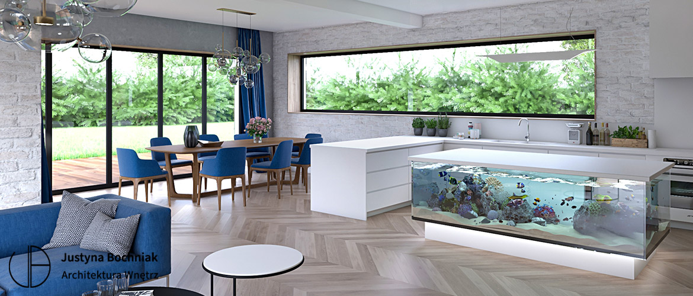

Kuchnia z wyspąJasne drewno / biel / błękit

Justyna Bochniak
ARCHITEKTURA WNĘTRZ
Nazywam się Justyna Bochniak i projektuję wnętrza, w których estetyka spotyka się z codziennością.
Od 15 lat tworzę projekty domów, apartamentów, rezydencji i przestrzeni biznesowych. Lubię wnętrza spokojne, dopracowane i przemyślane w detalu, ale zawsze zaczynam od funkcji.
Bo dobry projekt nie powstaje tylko z pięknych inspiracji. Powstaje z rozmowy, obserwacji i decyzji, które później naprawdę ułatwiają życie.
A jeśli planujesz swoją przestrzeń, napisz. Chętnie porozmawiam.
Poznajmy się ↗



Zakres dopasowany do Ciebie.
Jeden spójny kierunek.
Układ funkcjonalny, koncepcja, wizualizacje i dobór materiałów. Dokumentacja techniczna oraz projekty mebli na wymiar pozwalają przełożyć pomysł na konkretne rozwiązania.
Omówmy Twój projekt ↗Wsparcie podczas wykończenia. Sprawdzam zgodność realizacji z projektem, konsultuję zmiany proponowane przez wykonawców i pomagam rozwiązywać sytuacje na budowie.
Poznaj zakres ↗Szersza koordynacja realizacji: kontakt z wykonawcami, kontrola harmonogramu, zamówień, dostaw i ustalonego budżetu. Zakres dopasowuję do konkretnej inwestycji.
Porozmawiajmy ↗
WARTO WIEDZIEĆ
Najlepiej już na etapie planowania budowy lub zakupu mieszkania. Wczesna współpraca pozwala przemyśleć funkcję i instalacje, zanim pojawią się ograniczenia. Jeśli jesteś na późniejszym etapie, również zapraszam do rozmowy.
Układ funkcjonalny, wizualizacje, dobór materiałów, kolorystyki, oświetlenia i wyposażenia, a także dokumentację techniczną, projekty mebli na wymiar i omówienie założeń z wykonawcami. Szczegóły zakresu ustalamy dla Twojej inwestycji.
Wycenę przygotowuję po poznaniu przestrzeni i oczekiwanego zakresu współpracy. Napisz o metrażu, lokalizacji i swoich planach.
Nie potrzebujesz gotowej koncepcji. Zaczynamy od rozmowy o Twojej codzienności, potrzebach i przyzwyczajeniach. Inspiracje pomagają nam wspólnie odnaleźć kierunek.
Tak. Współpracę możemy rozszerzyć o nadzór autorski lub inwestorski. Zakres wsparcia i zasady współpracy omawiamy indywidualnie.
ZRÓBMY MIEJSCE NA COŚ DOBREGO
Nowy dom, mieszkanie, przestrzeń dla Twojej marki?
Chętnie poznam Twoje plany.

Bądźmy
w kontakcie.
Na tym profilu pokażę Ci realizacje, materiały, kulisy pracy, detale i rozwiązania, które często nie są oczywiste na pierwszy rzut oka.
Zostań, jeśli jesteś przed budową, remontem albo chcesz lepiej zrozumieć, jak wygląda dobrze poprowadzony projekt wnętrza.